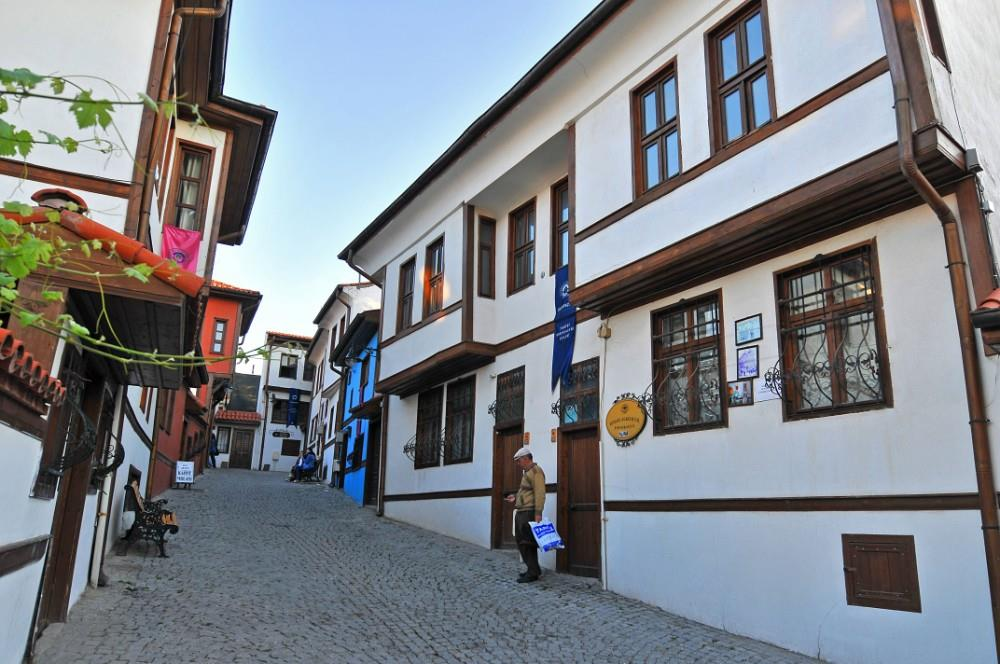

ODUNPAZARI EVLERİ
(Odunpazarı Kentsel Sit Alanı)
Odunpazarı semti kentin güneyindeki tepelerde kurulmuştur. Geleneksel Anadolu Türk Mimarisi örneklerini koruyan semt, kıvrımlı yolları, çıkmaz sokakları. ahşap süslemeli-bitişik düzenli- cumbalı evleri ile örf, adet ve geleneklerini koruyarak günümüze kadar gelmiştir. Odunpazarı ''Tarihi ve Kentsel Sit'' olarak koruma altına alınmıştır.
Odunpazarı Belediyesinin Odunpazarı Evleri’ni Yaşatma Projesi bu tarihî ve kültürel mirasın dünyaya tanıtılması açısından önemlidir. UNESCO Dünya Miras Listesi’nde yer alan ve bu proje kapsamında öncelikle geleneksel Odunpazarı evlerinin yoğun olarak bulunduğu 30 sokakta 300 ev, 3 Camii, 1 Külliye, 2 Kervansaray, 15 Çeşme, 1 Han’ın restorasyonu ve aslına uygun yapımı gerçekleştirilmiştir.
Evliya Çelebi’nin Seyahatname’sinde de adından büyük bir övgü ile söz edilen Odunpazarı, bugün Seyahatname’de adı geçen sokakların 5’ini aynı ismi ile korumaya devam etmektedir.
Dar sokakların iki yanına sıralanan evlerin bazıları bembeyaz duvarlarının arasında kahverengi çerçeveleri ile bir yağlıboya tablo gibi görünüyor. Bazı evler ise çivit mavisi, kiremit kırmızısı görünümleri ile bu tabloya farklı renkler katıyor. Evler, Osmanlı döneminin kent mimarisinin önemli özelliklerini içinde barındırmaktadır. Evlerin sokağa bakan cepheleri çıkmalı, konsolludur.
Hem yaşam alanı hem de ailenin ekonomik faaliyetine uygun biçimde tasarlanan evlerde genellikle alt katta mutfak, ahır, çamaşırlık veya depo bulunurken aile, yaşamını üst katlarda sürdürmektedir.
Bölgede evlerin yanı sıra döneme özgü Kurşunlu Camii ve Külliyesi de bulunmaktadır. Ayrıca bölgenin geleneksel el sanatlarının örneklerini görebileceğiniz tarihi Atlıhan, Eskişehir Sanatları Çarşıları ve dünyada sadece Odunpazarı’nda bulunan Lületaşı Müzesi de mutlaka ziyaret edilmesi gereken yerlerin arasında yer alır.
Odunpazarı; geleneksel el sanatları konusunda bakır işlemeciliği, kalaycılık, antika ve ahşap oymacılığı meraklılarının önemli bir uğrak noktasıdır. Beyler Sokağı’nda yer alan antikacı, Kurşunlu Camii Sokağı’nda yer alan ahşap oyuncakçı, bölgeye akın eden ziyaretçilere Odunpazarı’ndan küçük ama çok özel anı objeleri ile sevdiklerine hoş bir sürpriz yapma imkânı sunmaktadır.
Odunpazarı’nın her sokağı, her konağı her an farklı bir sürprizle karşınıza çıkabilir. Hafız Ahmet Efendi Konağı’nda yer alan; Mustafa Kemal Atatürk ve dönemin İran Şahı Rıza Pehlevi’ye armağan edilen “Gül Asa”. Bir örneği hâlen Anıtkabir Müzesi’nde sergilenen “Gül Asa” büyük lületaşı ustası Hafız Ahmet Efendi tarafından yapılmış önemli bir eserdir.
“...Eşraf ve sipahisi çoktur... Şehir 17 mahalledir. Evleri bağlı, bahçeli ve mamurdur... Şehrin 4 çevresi gül, gülistan, bağ ve bostan dolu olup hububatı çok bir şehirdir...”
-Evliya Çelebi, Seyahatname
Odunpazarı Belediyesinin Odunpazarı Evleri’ni Yaşatma Projesi bu tarihî ve kültürel mirasın dünyaya tanıtılması açısından önemlidir. UNESCO Dünya Miras Listesi’nde yer alan ve bu proje kapsamında öncelikle geleneksel Odunpazarı evlerinin yoğun olarak bulunduğu 30 sokakta 300 ev, 3 Camii, 1 Külliye, 2 Kervansaray, 15 Çeşme, 1 Han’ın restorasyonu ve aslına uygun yapımı gerçekleştirilmiştir.
Evliya Çelebi’nin Seyahatname’sinde de adından büyük bir övgü ile söz edilen Odunpazarı, bugün Seyahatname’de adı geçen sokakların 5’ini aynı ismi ile korumaya devam etmektedir.
Dar sokakların iki yanına sıralanan evlerin bazıları bembeyaz duvarlarının arasında kahverengi çerçeveleri ile bir yağlıboya tablo gibi görünüyor. Bazı evler ise çivit mavisi, kiremit kırmızısı görünümleri ile bu tabloya farklı renkler katıyor. Evler, Osmanlı döneminin kent mimarisinin önemli özelliklerini içinde barındırmaktadır. Evlerin sokağa bakan cepheleri çıkmalı, konsolludur.
Hem yaşam alanı hem de ailenin ekonomik faaliyetine uygun biçimde tasarlanan evlerde genellikle alt katta mutfak, ahır, çamaşırlık veya depo bulunurken aile, yaşamını üst katlarda sürdürmektedir.
Bölgede evlerin yanı sıra döneme özgü Kurşunlu Camii ve Külliyesi de bulunmaktadır. Ayrıca bölgenin geleneksel el sanatlarının örneklerini görebileceğiniz tarihi Atlıhan, Eskişehir Sanatları Çarşıları ve dünyada sadece Odunpazarı’nda bulunan Lületaşı Müzesi de mutlaka ziyaret edilmesi gereken yerlerin arasında yer alır.
Odunpazarı; geleneksel el sanatları konusunda bakır işlemeciliği, kalaycılık, antika ve ahşap oymacılığı meraklılarının önemli bir uğrak noktasıdır. Beyler Sokağı’nda yer alan antikacı, Kurşunlu Camii Sokağı’nda yer alan ahşap oyuncakçı, bölgeye akın eden ziyaretçilere Odunpazarı’ndan küçük ama çok özel anı objeleri ile sevdiklerine hoş bir sürpriz yapma imkânı sunmaktadır.
Odunpazarı’nın her sokağı, her konağı her an farklı bir sürprizle karşınıza çıkabilir. Hafız Ahmet Efendi Konağı’nda yer alan; Mustafa Kemal Atatürk ve dönemin İran Şahı Rıza Pehlevi’ye armağan edilen “Gül Asa”. Bir örneği hâlen Anıtkabir Müzesi’nde sergilenen “Gül Asa” büyük lületaşı ustası Hafız Ahmet Efendi tarafından yapılmış önemli bir eserdir.
“...Eşraf ve sipahisi çoktur... Şehir 17 mahalledir. Evleri bağlı, bahçeli ve mamurdur... Şehrin 4 çevresi gül, gülistan, bağ ve bostan dolu olup hububatı çok bir şehirdir...”
-Evliya Çelebi, Seyahatname